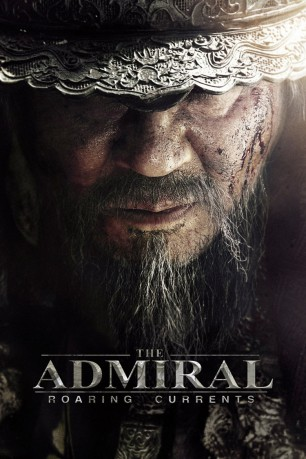
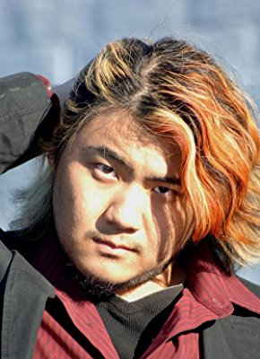

#1563 The Admiral - Roaring Currents
Alternativ: The Admiral (Englischer Titel)
 
 IMDB-Wertung: 7.2 / 10
IMDB-Wertung: 7.2 / 10  Metascore: 0
Metascore: 0 
Während der japanischen Invasion auf Korea Ende des 16. Jahrhunderts feierte die koreanische Flotte einen ihrer größten Siege im Jahr 1597: In der legendären Seeschlacht von Myeongryang gelang es Admiral Yi Sun-sin (Min-sik Choi), 133 japanische Kriegsschiffe mit nur dreizehn eigenen zu zerstören.
Jahr: 2014
Dauer: 126 Minuten
FSK: 16
Land: Süd-Korea Studio: New KSMTonspuren:
Untertitel: Deutsch,
Auflösung: 1080p (1920x804) Größe: 8181 MB
Genre: Abenteuer, Krieg, Biographie
Regisseur: Han-min Kim
Drehbuch: Cheol-Hong Jeon, Han-min Kim
Soundtrack: Tae-seong Kim
Darsteller:
 Min-sik Choi als Admiral Yi Sun-Shin
Min-sik Choi als Admiral Yi Sun-Shin Seung-ryong Ryu als General Kurushima Michifusa
Seung-ryong Ryu als General Kurushima Michifusa- Jin-woong Jo als General Wakizaka Yasuharu
- Ku Jin als Im Jun-yeong
- Jung-hyun Lee als Lim Jung, war widow
- Tae-hoon Kim als Kim Joong-geol
- Bo-gum Park als Soo-bong
 Greg Chun als Song Hui-rip
Greg Chun als Song Hui-rip Richard Epcar als General Kurushima Michifusa
Richard Epcar als General Kurushima Michifusa- Kai Jordan als Additional voices
 Michael McConnohie als Admiral Yi Sun-Shin
Michael McConnohie als Admiral Yi Sun-Shin- Myung-gon Kim als Navy Commander Todo Takadora
- Ryôhei Ohtani als Junsa
- Min-woo No als Haru
- Seung-joon Lee als Captain Ahn Wi
- Duek-mun Choi als Song Yeo-jong
- Zach Aguilar als Yi Hoe
- Will Barrett als captain Kim Uk-Chu / Elder Kim
- Tom Bauer als Junsa
 Corina Boettger als Additional voices
Corina Boettger als Additional voices- Ray Carsillo als Additional voices
 Chris Cason als captain Ahn Wei / Hwang Bo-man
Chris Cason als captain Ahn Wei / Hwang Bo-man- Stephanie Cheng als Additional voices
- Susie Chong als Additional voices
 Marc Diraison als General Wakizaka Yasuharu
Marc Diraison als General Wakizaka Yasuharu- Christopher Hackney als Lim Jun-yeong
- Joe Hernandez als Additional voices
- Steve Kramer als Navy Commander Todo Takadora
- Alan Lee als Bae Su-bong / Katsura
 Dave Mallow als captain Kato Yoshiaki / Kim Dol-son
Dave Mallow als captain Kato Yoshiaki / Kim Dol-son- Megan Niessink als Lim Jung, war widow / Additional voices
- Tony Oliver als captain Bae Seol / Kuroda
- Sheldon Roberts als Additional voices
- Michael Rogel als Additional voices
 Michael Sorich als Commander-in-chief Kwon Yul
Michael Sorich als Commander-in-chief Kwon Yul-  Kaiji Tang als Nah Dae-yong
 Kirk Thornton als Kim Joong-geol
Kirk Thornton als Kim Joong-geol
Datei: X:\HD-Eastern-Classic(A-M)\Admiral - Roaring Currents, The (2014, FSK16, 1920x804).mkv seit 22.07.2015
Festplatte: HD Eastern+Western
 Es gibt insgesamt 63 Filme in der Gruppe 'HD-Eastern-Classic(A-M)'
Es gibt insgesamt 63 Filme in der Gruppe 'HD-Eastern-Classic(A-M)'